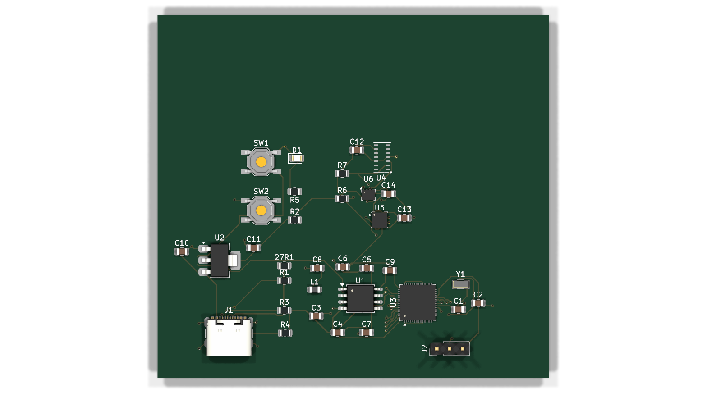

An offline AI first-aid assistant prototype for the backcountry: a wrist-worn sensor hub streams motion, environment, and raw optical data to a local language model — no internet — which combines it with what you say and speaks numbered first-aid guidance.
You're injured, alone, hours from help, with no signal. Every consumer assistant assumes a network. Ghost Medic's premise: the sensing, the reasoning, and the voice all have to live with you — a sensor hub on the wrist, a local LLM in the pack, a voice-and-screen interface — working entirely offline.
Four roles. In the shipping concept they're separate devices; in today's demo some collapse onto a laptop — that mapping is documented, not hidden:
┌──────────────────┐ ┌──────────────────┐ ┌──────────────────┐ ┌──────────────────┐
│ BIOSENSOR / │ │ WEARABLE │ │ PACK BRAIN │ │ INTERFACE │
│ WRIST UNIT │ │ (sensor hub) │ │ (compute) │ │ (voice+screen) │
│ │ │ │ │ │ │ │
│ MAX30102 raw PPG │ RP2040 / Pico │ │ local LLM │ │ React Native / │
│ BMP280 baro │──▶│ reads I²C @10Hz │──▶│ (Ollama today) │──▶│ Expo app │
│ LIS3DH accel │ │ emits NDJSON │ │ + vision/voice │ │ speaks steps │
│ (custom PCB) │ │ over USB serial │ │ │ │ │
└──────────────────┘ └──────────────────┘ └──────────────────┘ └──────────────────┘
│ ▲
══════════ THE BRIDGE ══════════════┘
NDJSON source → WebSocket relay (wired stand-in
for the eventual wrist→pack BLE link — NOT BLE)
One JSON line format is the contract between every stage (DATA_FORMAT.md). Because a line looks identical whether it came from a real Pico, the browser simulator, or a replayed capture, any producer can replace any other without touching the consumers. That's what lets the whole pipeline be proven today, hardware-free, and lets a real flashed Pico slot in later by changing one flag.
This is real and interactive, right here in the page. It runs the same
physics and fall-detection formulas as the firmware (a JavaScript mirror of
the C shown below — same constants, same state machine; compare them yourself)
and emits the identical JSON line format a flashed Pico would print.
Drag the sliders; press ⚠ Simulate Fall; toggle a sensor failure and watch
the wire format handle it honestly ("ok":false, fields omitted, never a fake 0).
Label: this is a simulator — no sensors are connected, and it says so in its own banner. What it proves is the data contract and the math, not hardware.
The firmware's sensor math lives in pure C modules with no hardware dependency, so the exact same source files compile into the RP2040 firmware and into ordinary laptop test binaries. The tests below aren't a copy of the logic — they link the shipping files themselves.
Air pressure drops predictably with height. The firmware inverts that with the international barometric formula: altitude = 44330 × (1 − (P/101325)0.1903), where 101325 Pa is standard sea-level pressure. This is the actual implementation, from firmware/bmp280_compensation.c:
float bmp280_pressure_to_altitude(float pressure_pa) {
return 44330.0f *
(1.0f - powf(pressure_pa / BMP280_SEA_LEVEL_PA, 0.1903f));
}
Honest limit (stated in the code and docs too): the sea-level reference is fixed, but real sea-level pressure drifts with weather. So the altitude is trustworthy for relative change — "you've climbed 300 m" — not survey-grade absolute elevation.
Before that formula can run, the BMP280's raw ADC readings must be corrected
with Bosch's per-chip calibration math (datasheet §3.11.3). The firmware
transcribes Bosch's floating-point reference implementation, keeping Bosch's own
variable names (t_fine, var1, dig_T1…) so a
reviewer can diff it line-by-line against the datasheet.
When a body is in free fall, an accelerometer briefly reads ≈0 g (nothing is pushing on it). When the fall is arrested, there's a high-g spike. The firmware flags a fall only when both happen in order, within 400 ms. Full source, firmware/fall_detection.c:
bool fall_update(fall_state_t *state, float magnitude_g, uint32_t now_ms) {
float m = magnitude_g;
/* Detect entry into a free-fall event. */
if (m < FREEFALL_THRESHOLD_G) { /* < 0.35 g */
state->in_freefall_window = true;
state->freefall_start_ms = now_ms;
return false; /* free-fall alone is not yet a fall */
}
/* Within the watch window after free-fall, look for impact. */
if (state->in_freefall_window) {
if (now_ms - state->freefall_start_ms > FALL_IMPACT_WINDOW_MS) {
state->in_freefall_window = false; /* window expired */
} else if (m > IMPACT_THRESHOLD_G) { /* > 2.5 g */
state->in_freefall_window = false;
state->fall_detected = true;
return true;
}
}
return false;
}
Label (also in the source): this is an illustrative heuristic with untuned textbook thresholds — a demonstration that the data is being used, not a validated or medical-grade fall detector.
Both outputs below are from actually running
firmware/tests/
on a laptop (make), freshly rebuilt. The BMP280 test checks the math
against the datasheet's own worked example; the fall test drives the three
canonical scenarios.
== BMP280 compensation math (host tests) == -- compensation against Bosch reference example -- PASS temperature ~= 25.08 C got 25.0825 PASS pressure ~= 100653 Pa got 100653.2656 -- altitude helper sanity checks -- PASS sea-level pressure -> ~0 m got 0.0000 PASS ~89875 Pa -> ~1000 m got 1000.1350 PASS lower pressure => higher altitude PASS all altitudes above sea level >= 0 == BMP280: 6 checks, 0 failed ==
== Fall-detection state machine (host tests) ==
PASS A: free-fall then impact within window
=> FALL flagged
PASS B: impact with NO prior free-fall
=> NOT flagged
PASS C: impact AFTER the 400 ms window
=> NOT flagged
== Fall: 3 checks, 0 failed ==
All host tests passed.
The full chain — sensor line → bridge → app → sensor-context block →
local LLM → guidance — runs today, offline, on one laptop. A visitor's
browser can't run the Node bridge or a local LLM, so this section is honest about
its three layers of evidence:
1 — Live (above): the simulator you just used emits the exact wire format.
2 — Recorded (below): a real transcript from a local run.
3 — Reproducible: exact commands to run the live pipeline yourself.
Label, unmistakably: what follows is recorded output from a
real run of the local model (llama3.2:3b via Ollama) using the
app's exact prompt construction — it is not a live model answering you now.
The run was seeded for reproducibility. The sensor block shown is precisely what
the app injects; the same block is viewable in the app UI per request via its
"SENSOR CONTEXT ATTACHED" chip.
The app attaches a delimited sensor snapshot to every request. When the wrist unit's accelerometer flags a fall, the app auto-submits a query (rising-edge triggered, 30 s cooldown — measured live: one model call per fall event, not one per replayed line). Sensor context sent with the fall query:
[SENSOR CONTEXT — wrist unit telemetry — BEGIN] Snapshot taken at device uptime 300 ms. Readings are supplementary; if they conflict with what the user reports, the user's report wins. DERIVED READINGS: - Altitude: 2.1 m (pressure-derived vs a fixed 101325 Pa sea-level reference; reliable for RELATIVE change only — NOT GPS or true elevation) - Temperature: 21.0 °C (AMBIENT air at the device — NOT body temperature) - Fall detected: YES (accelerometer free-fall→impact heuristic, not medical-grade) RAW SIGNALS (non-diagnostic): - Optical counts: red 10249, ir 10398. These are raw photodiode counts from the optical sensor. No pulse-extraction algorithm runs on this device: heart rate and blood-oxygen saturation (SpO2) are NOT available and must not be inferred from these numbers. - Acceleration magnitude: 2.62 g (raw) [SENSOR CONTEXT — END]
Model response to the auto-triggered fall query (recorded, verbatim):
**IMMEDIATE ACTION REQUIRED** 1. **Stop any bleeding**: Apply gentle pressure to the wound with a clean cloth or bandage for at least 5 minutes if you see any bleeding. 2. **Check for head, neck, and spine injury**: Look for signs of concussion, broken neck, or spinal cord injury, such as numbness, tingling, weakness, or difficulty moving your arms or legs. 3. **Assess for hidden trauma**: Check for injuries that may not be immediately visible, such as internal bleeding, broken ribs, or head trauma. 4. **Look for breathing difficulties**: Check if you're having trouble breathing. 5. **Check for movement and sensation**: Move each limb carefully to check for numbness, tingling, or weakness. **EVACUATION LINE**: CALL FOR HELP NOW — GET MEDICAL ASSISTANCE AS SOON AS POSSIBLE.
For contrast, the same user report ("I feel a bit dizzy") with a no-fall sensor block produced generic dizziness care (sit down, loosen clothing, elevate legs) with no spine/head assessment — the sensor state measurably changed the guidance. The full four-case transcript, including an honesty probe where the model is asked for heart rate (it did not invent one), is in the repo's session reports.
git clone https://github.com/anayvaidya11/Ghost-Medic && cd Ghost-Medic npm install # Expo app deps cd bridge && npm install && cd .. # bridge dep: 'ws' only cp services/llmConfig.example.ts services/llmConfig.ts # point at your Ollama cp services/bridgeConfig.example.ts services/bridgeConfig.ts ollama pull llama3.2:3b && ollama serve # local model # Terminal 1 — replay firmware-format telemetry (contains a fall event): cd bridge && node bridge.js --source=file --file=sample.ndjson --loop # Terminal 2 — the app, on web: npm run web # Watch: the sensor monitor goes ● LIVE, the fall auto-triggers ONE query, # and the response carries a "SENSOR CONTEXT ATTACHED" chip showing the # exact block the model was given.
Honesty note on "streaming": the app's response appears
word-by-word, but that is display pacing of an already-complete response
(stream:false), not model token streaming. The code and
ARCHITECTURE.md
say the same.
Bare-metal C for the RP2040 (Raspberry Pi Pico SDK): initializes three I²C
sensors on one bus, loops at 10 Hz, prints one JSON object per line over USB
serial. Structured deliberately: hardware drivers (bmp280.c,
lis3dh.c, max30102.c) are separated from pure math
modules (bmp280_compensation.c, fall_detection.c)
precisely so the math is host-testable — the tests you saw above.
| Claim | Status |
|---|---|
Compiles against the real Pico SDK, zero warnings under -Wall -Wextra at -O3 | ✅ Verified — build recorded in firmware/README.md |
Produces a flashable ghost_medic_firmware.uf2 | ✅ Verified — file in repo |
| Sensor math passes host unit tests | ✅ Verified — 6/6 + 3/3, rerun 2026-07-22 |
| Flashed and run on a physical Pico | ❌ Not done |
| Readings checked against real sensors | ❌ Not done |
The MAX30102 driver reads raw RED/IR FIFO counts only — there is no heart-rate or SpO₂ algorithm anywhere in this project, by design.

A single-board wrist unit, editable source in hardware/ (KiCad 10; 35 footprints, ~477 routed track segments) · schematic PDF.
| Choice | Why |
|---|---|
| RP2040 + W25Q128 QSPI flash | The firmware already targets the Pico SDK; the discrete RP2040 needs external flash, and the 12 MHz crystal matches the SDK's default clocking. |
| MAX30102 + BMP280 + LIS3DH on one I²C bus | The three sensors the firmware drives, sharing one bus with a single 4.7 kΩ pull-up pair — same topology the firmware's pin assignment (SDA=GPIO4, SCL=GPIO5) was written for. |
| USB-C + AMS1117-3.3 | Power and flashing over one connector; simple linear regulation from VBUS to the 3.3 V rail. BOOT/RUN push buttons for flashing without a debugger. |
| 3-pin SWD header | Debug/recovery path if USB flashing isn't enough. |
A hardware bring-up (flash a Pico dev board on a breadboard, film it streaming real JSON) is the roadmap's next credibility step — it is not done yet, and this page will say so until it is.
The model is off-the-shelf (llama3.2:3b under Ollama, fully local).
The engineering is in the system prompt, the enforced output contract,
and the sensor-context injection — all in
services/llmService.ts.
You are GHOST MEDIC — an offline AI survival assistant for solo backcountry users... Follow wilderness medicine principles (PAS, ABCDE, WMS guidelines). Always assess scene safety first. Be direct. Use simple words. No medical jargon. Each step must be one sentence. Maximum 6 steps. Always end with an EVACUATION line...
Why these choices: scene safety first is real wilderness doctrine (PAS); ≤6 one-sentence steps is a usability decision for a panicking reader; the mandatory EVACUATION line exists because "do I call for rescue?" is the single most consequential output, and the app parses that line into its own highlighted UI element — prompt + parser together form a structured interface to the model, not a chat box.
SENSOR CONTEXT: messages may include a block delimited by [SENSOR CONTEXT...] - Altitude is pressure-derived and RELATIVE... do not trust the absolute number. - Temperature is AMBIENT air at the device, never body temperature... - "Fall detected: YES" is a mechanism-of-injury signal... not a diagnosis. - Raw optical counts are NOT vital signs. NEVER infer, estimate, or state a heart rate, pulse, or oxygen saturation from them... - Sensor context is supplementary. If it conflicts with what the user reports, the user's report wins...
The load-bearing honesty rule, taught to the model itself: the optical sensor yields raw photodiode counts, and no pulse-extraction algorithm runs — so the prompt forbids the model from ever inventing a heart rate or SpO₂. In recorded testing the model did not fabricate one. (Observed limit of the small model: it avoids inventing vitals but doesn't always explain that it can't measure them.)
Stub labels: voice capture is real but speech-to-text is a stub; the wound-photo path captures a real image but vision analysis is a stub. The fully-real end-to-end path is: typed text + sensor context → local LLM → parsed, spoken response.
The whole table, no burying. Mirrors ARCHITECTURE.md.
| Claim | Real? |
|---|---|
Firmware compiles against the real Pico SDK, zero warnings, valid .uf2 | ✅ Verified |
| Firmware sensor math (BMP280 compensation, fall detection) unit-tested on host | ✅ Verified (6/6, 3/3 — rerun 2026-07-22) |
| PCB designed & routed (KiCad source in repo) | ✅ Real design — not fabricated/assembled |
| Firmware run on physical hardware / real sensors | ❌ Not yet |
| App → local LLM → spoken numbered advice | ✅ Works (Ollama, local) |
| Live sensor data actually driving the app | ✅ Verified 2026-07-22 (bridge replay → browser app) |
| Sensor readings influencing the LLM's advice | ✅ Verified 2026-07-22 (fall auto-trigger, one call per 30 s cooldown, live local Ollama) |
| BLE wrist→pack radio link | ❌ Simulated by the wired WebSocket bridge, on purpose |
| Speech-to-text, wound vision | ❌ Stubs |
| Dedicated "pack" compute device | ❌ Laptop stands in |
| Model token streaming in the UI | ⚠ Simulated — display pacing of a complete response |
| Medical validity of any guidance | ❌ Not claimed, not tested — engineering prototype only |